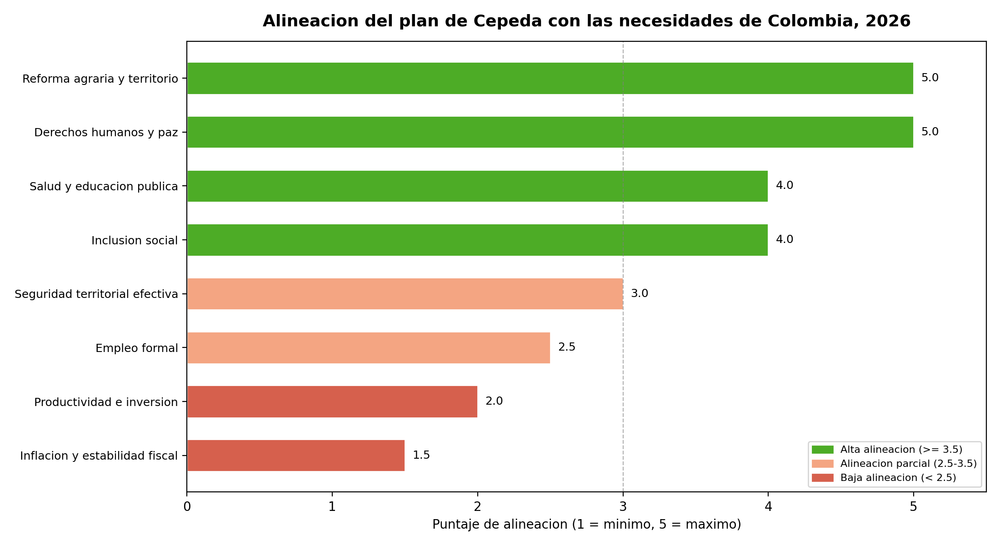
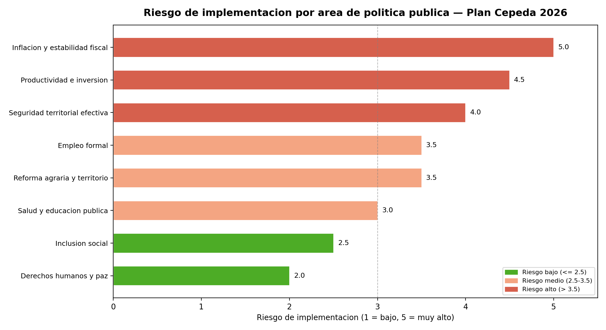
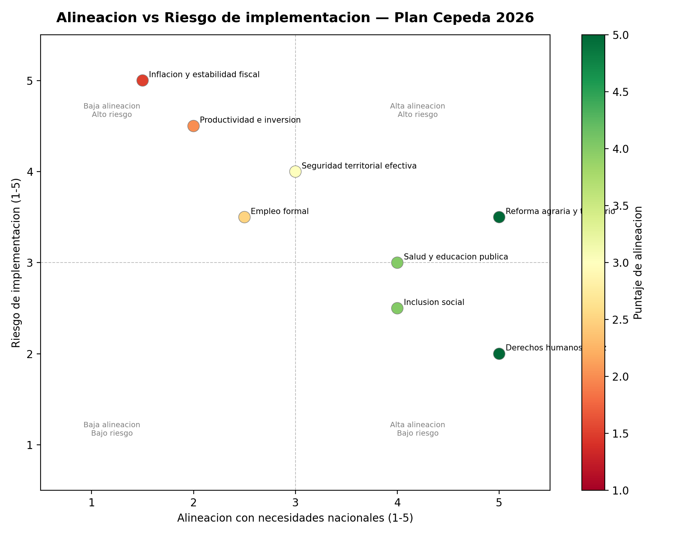
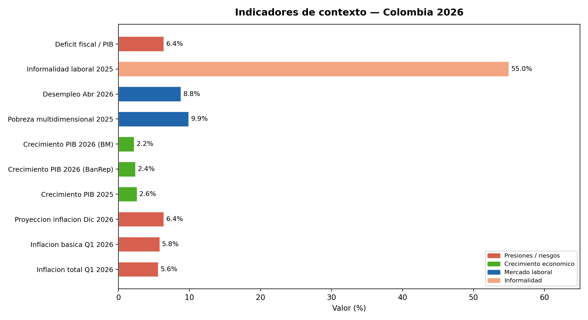
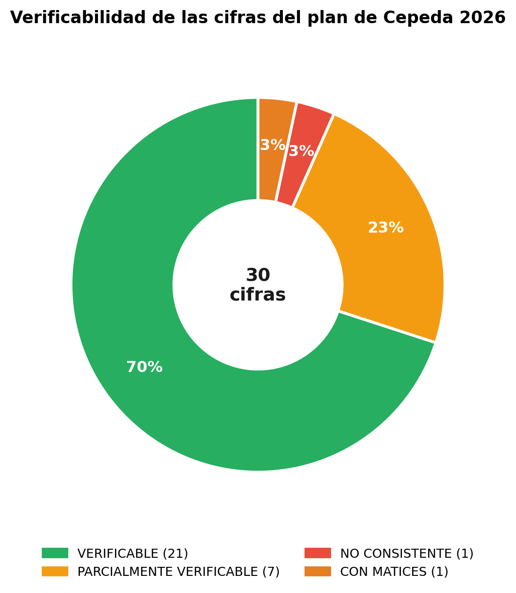
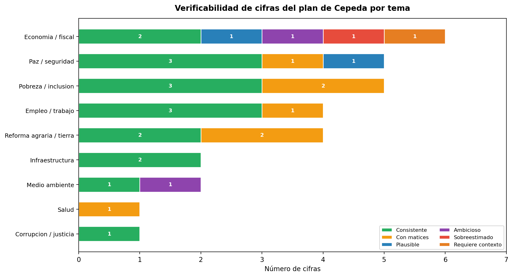
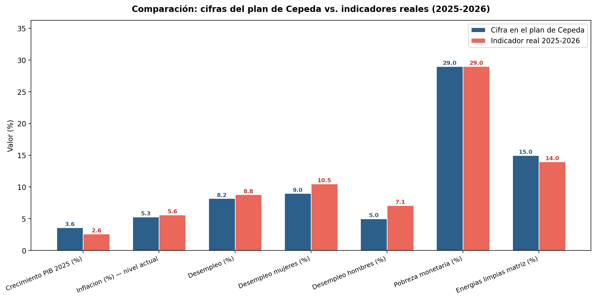

Evaluación de política pública · Colombia 2026
Análisis de alineación entre las prioridades del programa de gobierno y los indicadores contextuales de Colombia, con citación Harvard autor-fecha.
¿El plan de gobierno de Iván Cepeda responde a las necesidades estructurales e inmediatas de Colombia en 2026, especialmente en inflación, sostenibilidad fiscal, productividad, formalización laboral, seguridad, desigualdad territorial, desarrollo rural, salud, educación y paz?
El proyecto original analisis-plan-gobierno-ivan-cepeda-2026 analizó qué dice el programa de Iván Cepeda Castro mediante procesamiento de lenguaje natural: frecuencias léxicas, modelado de tópicos, análisis de sentimiento, redes semánticas, reconocimiento de entidades nombradas y métricas retóricas (Muñoz, 2026).
Este segundo proyecto evalúa si esas prioridades responden a lo que Colombia necesita hoy. La unidad de análisis es la alineación entre el énfasis discursivo del plan y los indicadores contextuales verificables del país en 2026.
El análisis original muestra que el programa de Cepeda es principalmente un documento de economía política redistributiva. Los términos dominantes incluyen "pueblo", "territorio", "social", "poder", "vida" y "paz". Los bigramas más frecuentes son: "pacto histórico", "pueblos indígenas", "reforma agraria", "revolución agraria", "derechos humanos" y "justicia social" (Muñoz, 2026).
El análisis señala una ausencia relativa de un tópico puramente macroeconómico. Esto importa porque la agenda de Colombia en 2026 no se limita a justicia social o paz: incluye inflación persistente, déficit fiscal, productividad estancada, inversión débil, informalidad laboral y riesgos de seguridad territorial (Banco de la República, 2026; World Bank, 2026).
En el primer trimestre de 2026, la inflación total fue de 5,6% y la inflación básica de 5,8%, ambas por encima de la meta del 3%. El Banco de la República proyectó que la inflación podría llegar a 6,4% en diciembre de 2026, y elevó la tasa de política monetaria a 11,25% (Banco de la República, 2026). Cualquier programa de gobierno debe explicar cómo financiará nuevas políticas sociales sin agravar estas presiones.
La economía colombiana creció 2,6% en 2025, pero con inversión débil en maquinaria, vivienda e infraestructura (Banco de la República, 2026). El Banco Mundial proyecta un crecimiento de 2,2% para 2026, limitado por productividad estancada, baja integración global, sistema tributario complejo y gasto público rígido (World Bank, 2026).
Colombia llega al ciclo electoral con avances sociales, pero con un déficit público estimado alrededor del 6,4% del PIB, uno de los más altos fuera del período pandémico (El País, 2026a). Un programa que proponga ampliar derechos sociales, reforma agraria, salud y educación debe especificar fuentes de financiación y compatibilidad con la regla fiscal.
El desempleo bajó a 8,8% en abril de 2026, uno de los niveles más bajos del siglo (El País, 2026b). Sin embargo, la informalidad laboral se mantiene alrededor del 55% (El País, 2026c), limitando protección social, productividad y base tributaria.
La pobreza multidimensional bajó a 9,9% en 2025, el mínimo desde que se mide sistemáticamente (El País, 2026d). Sin embargo, persisten brechas profundas: Bogotá tiene ingresos casi seis veces superiores a Chocó, y los niños en La Guajira tienen el doble de probabilidad de rezagarse en la escuela que los de la capital (World Bank, 2026).
Colombia enfrenta disputas de grupos armados por control territorial, especialmente en zonas ligadas a economías ilegales. Enfrentamientos recientes causaron al menos 52 muertos en zonas de disputa (Reuters, 2026), y se han reportado capturas vinculadas a redes de extorsión y secuestro (Associated Press, 2026).
La escala de alineación va de 1 a 5: 5 = muy alineado; 3 = parcialmente alineado; 1 = casi ausente. El riesgo de implementación también se mide de 1 (bajo) a 5 (muy alto).
| Área | Alineación | Riesgo | Riesgo principal |
|---|---|---|---|
| Derechos humanos y paz | 5.0 | Bajo 2.0 | Que la paz no venga acompañada de control territorial efectivo |
| Reforma agraria y territorio | 5.0 | Medio 3.5 | Baja capacidad estatal para implementar catastro, tierras e infraestructura |
| Inclusión social | 4.0 | Medio 2.5 | Sostenibilidad fiscal del gasto social |
| Salud y educación pública | 4.0 | Medio 3.0 | Financiamiento y capacidad administrativa |
| Seguridad territorial efectiva | 3.0 | Alto 4.0 | Insuficiencia de instrumentos coercitivos, judiciales e institucionales |
| Empleo formal | 2.5 | Medio 3.5 | Mayor costo laboral para pequeñas empresas sin transición gradual |
| Productividad e inversión | 2.0 | Alto 4.5 | Falta de estrategia clara para inversión privada, tecnología y exportaciones |
| Inflación y estabilidad fiscal | 1.5 | Alto 5.0 | Expansión de gasto sin financiamiento creíble |




Se extrajeron 84 cifras cuantitativas del programa de gobierno (programa-gobierno-2026-2030.pdf, 209 páginas) mediante análisis automatizado del texto con pdfplumber y expresiones regulares. De ellas, se seleccionaron 30 cifras clave para verificación cruzada con indicadores públicos de Colombia 2025–2026. Cada cifra se clasificó en cuatro categorías:



| Pág. | Cifra en el plan | Tema | Indicador real 2025–2026 | Estado | Fuente de contraste |
|---|---|---|---|---|---|
| 22 | 94% impunidad por corrupción | Corrupción / justicia | ~94% (CCSPJP 2024) | ✅ Consistente | Consejo Ciudadano Seg. Pública (2024) |
| 67 | Pobreza monetaria bajó de 42% a 29% | Pobreza | DANE 2020–2024: 42,5% → 29% | ✅ Consistente | DANE Pobreza Monetaria 2020–2024 |
| 93 | 10% más ricos poseen 81% de tierras | Reforma agraria | IGAC-OXFAM: Gini tierra = 0,89 | ✅ Consistente | IGAC (2017); OXFAM Colombia (2017) |
| 200 | 80% municipios sin agua potable | Infraestructura rural | DANE ENA: 79,4% con deficiencias | ✅ Consistente | DANE Estadísticas Agua (2022) |
| 191 | 37% aumento salario mínimo | Empleo | Acumulado 2022–2025: ~42% | ✅ Consistente | Ministerio del Trabajo (2025) |
| 86 | 10,1 millones de víctimas (RUV) | Paz / víctimas | RUV 2025: 9,56M activas; histórico >10M | ✅ Consistente | Unidad para las Víctimas — RUV (2025) |
| 426 | Del 2% al 15% en energías limpias | Medio ambiente | UPME 2025: ~13–15% capacidad instalada | ✅ Consistente | UPME; XM operador sistema (2025) |
| 219 | Desempleo al 8,2% | Empleo | DANE Abr-2026: 8,8%; anual 2025: 8,9% | ⚠️ Con matices | DANE GEIH; El País (2026b) |
| 191 | 2,5 millones de empleos creados | Empleo | DANE: variación neta ocupados ~1,6M | ⚠️ Con matices | DANE GEIH 2022–2025 |
| 67 | 17 millones en pobreza monetaria | Pobreza | DANE 2024: ~15,1M (29% sobre 52M hab.) | ⚠️ Con matices | DANE Pobreza Monetaria (2024) |
| 355 | Desempleo mujeres 9% vs hombres 5% | Empleo / género | DANE 2025: mujeres 10,5%; hombres 7,1% | ⚠️ Con matices | DANE GEIH (2025) |
| 116 | 27,6 billones inversión Pacto Cauca | Economía / fiscal | Presupuesto nacional total ~100 billones | ⚠️ Ambicioso | MHCP Presupuesto (2026) |
| 426 | Reducir 51% emisiones GEI al 2030 | Medio ambiente | Meta NDC real; cumplimiento en duda según IDEAM | ⚠️ Ambicioso | IDEAM NDC Colombia; UNFCCC (2020) |
| 219 | Economía creciendo al 3,6% | Economía macro | BanRep 2025: PIB = 2,6% | ❌ Sobreestimado | Banco de la República (2026) |
El programa de Iván Cepeda responde con fuerza a las heridas históricas de Colombia: desigualdad territorial, concentración de tierra, exclusión social, violencia política, víctimas y derechos humanos. En estas dimensiones, el plan muestra alta alineación con necesidades profundas del país (World Bank, 2026; Reuters, 2026; Associated Press, 2026).
Sin embargo, Colombia en 2026 también enfrenta restricciones inmediatas: inflación por encima de la meta, crecimiento moderado, inversión débil, productividad estancada, informalidad alta y deterioro fiscal (Banco de la República, 2026; El País, 2026a). En estas áreas, el análisis textual del programa sugiere una menor centralidad discursiva (Muñoz, 2026).
Conclusión: El plan de Cepeda es fuerte como agenda de justicia histórica y transformación social, pero necesita mayor precisión económica para responder plenamente a lo que Colombia necesita en 2026: estabilidad fiscal, productividad, inversión, formalización laboral y seguridad territorial efectiva.
El análisis combina tres fuentes: (i) los resultados del análisis NLP del programa de gobierno (Muñoz, 2026); (ii) indicadores macroeconómicos y sociales de Colombia publicados en 2026 por el Banco de la República, el Banco Mundial y medios de prensa internacionales; y (iii) una matriz de alineación construida por el autor con escala Likert de 1 a 5, evaluando cada área de política pública.
Los datos crudos están disponibles en los archivos
data/alineacion_plan_necesidades_2026.csv y
data/indicadores_contexto_colombia_2026.csv.
Los gráficos se generan con el script
scripts/graficar_alineacion.py
usando Python (pandas, matplotlib).